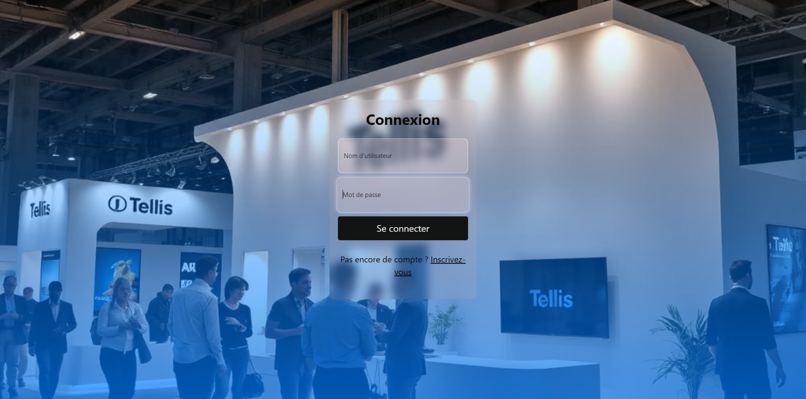
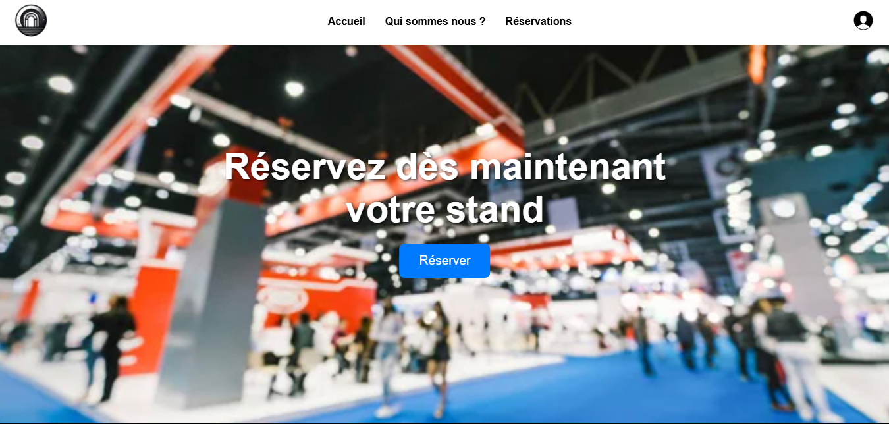
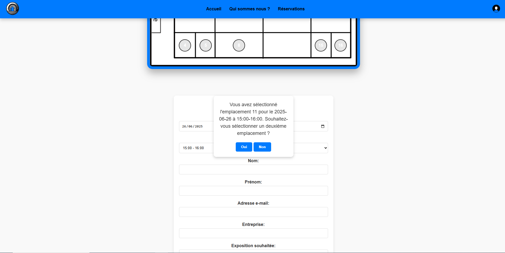

AP1 - BTS SIO SLAM
Plateforme de réservation
Tellis
Site web professionnel et responsive pour la gestion des exposants d'un salon — réservation d'espaces, gestion des inscriptions et tableau de bord organisateur.


Technologies
HTML & CSS
PHP
MySQL
JavaScript
Responsive
Public cible
- Associations et entreprises souhaitant exposer
- Organisateurs du salon (planning, suivi)
Fonctionnalités
Ce que la plateforme permet
Une solution complète pour les organisateurs comme pour les exposants.
Côté exposants
- Création de compte et authentification sécurisée
- Visualisation des espaces disponibles
- Réservation de créneaux et d'emplacements
- Suivi de son inscription et statut
Côté organisateurs
- Tableau de bord de gestion du salon
- Gestion des espaces et créneaux disponibles
- Validation et suivi des inscriptions exposants
- Export et administration des données
Compétences mises en œuvre
- Conception UX et maquettage
- Développement front-end et back-end
- Tests fonctionnels et validation des flux
- Gestion de versions avec Git
